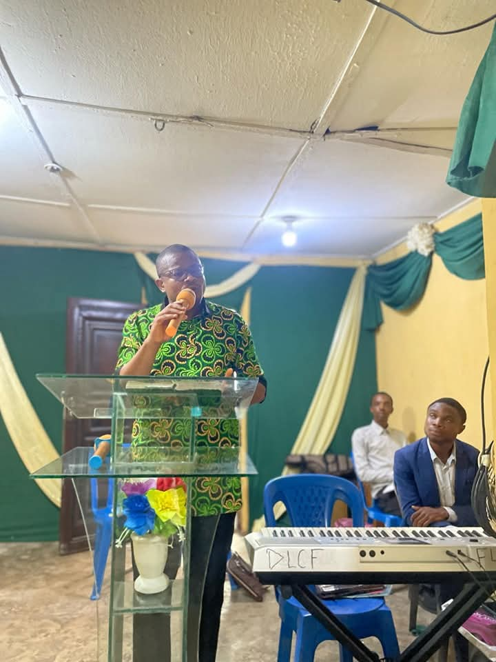

Welcome to DLCF FUTIA
A campus community committed to Christ-centered living and transformation.
Our Mentor: Pastor W.F. Kumuyi
Pastor William Folorunsho Kumuyi, the founder and General Superintendent of the Deeper Christian Life Ministry, is a transformational leader who has influenced millions of young lives. A first-class Mathematics graduate from the University of Ibadan, Pastor Kumuyi answered God's call by leaving behind prestigious academic opportunities to preach holiness and revival.
His ministry has reshaped the spiritual landscape of campuses across Nigeria and beyond. Through the Deeper Life Campus Fellowship (DLCF), Pastor Kumuyi has inspired thousands of young people to embrace a life of righteousness, purity, discipline, and service to God.
His teachings continue to ignite spiritual awakening and excellence among the youth, nurturing them not only as future professionals, but as ambassadors of Christ. Many young lives have been restored, academic lives improved, and destinies aligned with purpose through his unwavering focus on Biblical truth.
"We are raising a new generation of young men and women who will change the world for Christ." — Pastor W.F. Kumuyi
About the Fellowship
The Deeper Life Campus Fellowship (DLCF) FUTIA is a vibrant spiritual hub for students and staff, anchored in the pursuit of holiness, truth, and academic excellence. Our divine mandate is to win souls, build them up through sound doctrine, and send them forth to live impactful lives on and off campus.
About our Campus Pastor
Pastor Ubong Henry Udoh is a passionate shepherd and teacher of God’s Word, devoted to raising a generation of spiritually grounded students at DLCF FUTIA. With a heart for discipleship and revival, he faithfully leads the fellowship with humility, wisdom, and a deep commitment to the truth of Scripture.
His messages are Spirit-filled, practical, and rooted in biblical truth—challenging students to live holy, purpose-driven lives on campus and beyond. Whether through preaching, mentoring, or personal counsel, Pastor Ubong inspires faith, character, and a closer walk with God in everyone he meets.
“It’s not about how far you’ve come, but how yielded you are to God.” — Pastor Ubong Henry Udoh
Our Beliefs
- We believe in the Bible as the inspired word of God.
- We believe in the Trinity: God the Father, Son, and Holy Spirit.
- We believe in salvation through faith in Jesus Christ.
- We believe in living a holy life and being a witness to others.
Location
Ikpetim Road, Opposite RCCG, Akwa Ibom State, Nigeria